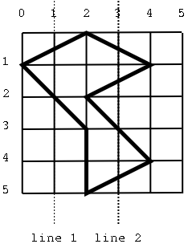

It is not easy for a bird to find food when winter approaches. The fields become empty and all the crops have been harvested. There are only some wild berries that can be picked, but their location is sometimes hidden.
We will help the birds find food. A bird looks for food by flying over a field and scanning it for the edible berries. Suppose that we are given the shape of a berry area in the field and we want to decide whether it is useful for the bird to cross the field along a chosen line. The flight is considered useful if the bird flies over an extension of berries that exceeds some threshold length.
We will view a berry area as a polygon where vertices are approximated by integer values. Birds always follow vertical lines in their flight, and never fly over the vertices of the polygon: in those points there are usually scarecrows that frighten them.
Your task is to decide if the flight along a given line is useful. You will be given a sequence of coordinates defining the berry area, a value for the threshold and the x-coordinate of the line to be followed by the bird.
As an example, the following figure illustrates the location of a berry area in a field, where "line1" and "line2" are possible flight paths. If the threshold is set to 2 length units, line 2 will be an interesting flight path but line 1 will be not.

Given the shape of the berry area, the threshold and the x-coordinate of the line to be followed by the bird, decide whether the line is useful. Assume that the given x-coordinate does not intersect the polygon at any vertex.
The first line of the input contains the number T of test cases, followed by T input blocks.
The first line of each inpt block consists of one integer N, the number of vertices of the polygon representing the berry area. Each of the following N input lines contains the X-Y integer coordinates of one vertex. The following line has an integer indicating the threshold for the decision. The last line of each input block has an integer for the x-coordinate to be evaluated. The set of vertices starts at an arbitrary point in the polygon and there are at most 10000 vertices in a polygon.
For each input block output a single line, containing "YES" if the chosen line is useful and "NO" otherwise.
2 7 4 1 2 2 5 3 2 5 2 3 0 1 2 0 2 3 7 4 1 2 2 5 3 2 5 2 3 0 1 2 0 2 3
YES YES